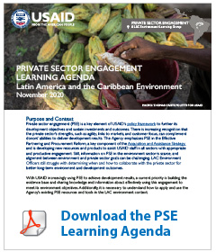

Learning Agenda
The goal of the LAC Environment Learning Agenda for Private Sector Engagement is to generate and share evidence to inform USAID efforts to engage the private sector to achieve environment outcomes, including biodiversity conservation and sustainable landscapes. lt defines learning questions1 and then develops specific activities to address those questions.
The Learning Agenda will contribute to and complement USAID’s Private Sector Engagement Policy, PSE Evidence and Learning Plan, and the Self-Reliance Learning Agenda.
Framework: Theory of Change
The Learning Agenda is framed by a theory of change that presents a hypothesis of expected results leading from USAID’s engagement with the private sector, both formally and informally, to improve environment outcomes.The theory of change and its associated learning questions are a framework to help teams plan for, learn about, and adapt their engagement with the private sector to enhance environment programs.The learning questions seek to test the assumptions, understand the context, and define key characteristics of an expected result. View the full theory of change here.
PSE for Environment Learning Questions
-
CategoryQuestionAlignment with other USAID Learning Agendas, Questions, Activities
-
Enabling Conditions
1. What are the barriers and incentives for the private sector to engage with USAID on environment programs?
2. What enabling conditions are essential for PSE?
2.1 What USAID investments in enabling conditions increase PSE for the environment?
2.2 When does it make sense to invest in enabling conditions instead of individual engagements?PSE: What context-specific factors drive effective engagement with the private sector? -
Engagement/relationship3. What characteristics lead to an effective and sustainable relationship and environment outcomes?PSE:What PSE relationship qualities influence results?
PSE Decision tree tool (in development)
PSE Hub Partnership Enduring Results Study -
Implementation4. How and to what extent does engaging with the private sector affect environment behaviors and practices of targeted actors?
4.1 Do the benefits of engaging the private sector to address environmental problems outweigh the costs?J2SR: How can PSE support countries in advancing on the Journey to Self-Reliance? -
Environment Outcomes5. How and to what extent does engaging with the private sector lead to improved environment outcomes?
• 5.1 What approaches to engage the private sector lead to sustained, large scale environment outcomes?Possible approaches: Jurisdictional/policy, landscape management, commodities, and markets, etc.
• 5.2 How can we measure the added value and impact of PSE on environment outcomes?PSE: How and to what extent does PSE improve development and humanitarian outcomes?
USAID partnership health indicator resource (in development)